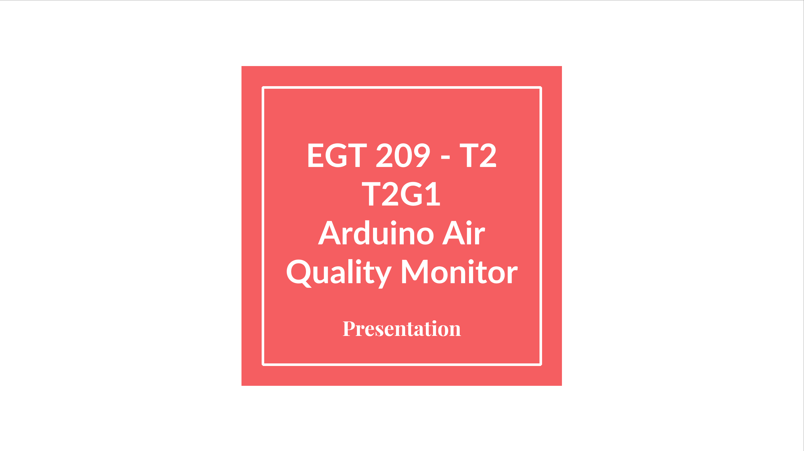

Arduino Air Quality Monitoring
Built a lab monitor using Arduino sensors and MQTT to MySQL. Parsed, cleaned, and visualized time-series data in Power BI to suggest cooling strategies for equipment protection.
Long Description
Me and my team developed a lab-environment monitoring system using Arduino microcontrollers, MQ/temperature/humidity sensors, and MQTT streaming into a MySQL backend. In Python (Jupyter) I parsed CSV exports, cleaned missing/duplicate readings, and engineered time-series features before publishing to a Power BI dashboard. The dashboard revealed weekend spikes in temperature and humidity—prompting a recommendation for weekend-only cooling interventions to protect equipment and personnel.
Technical Highlights
- Arduino microcontrollers with MQ sensors and MQTT streaming
- Python-based CSV cleaning, export to MySQL
- Power BI dashboard showing time-based air quality trends